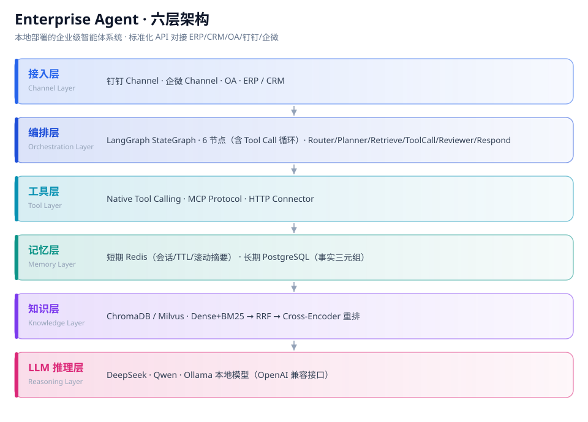

岗位方向 · AI 智能体开发工程师
AI 智能体开发工程师
独立设计并交付企业级 AI智能体 系统：不止会调 API，而是自建六层架构——编排、RAG、工具调用、双视野记忆、容错降级、评测与全链路可观测性，并附真实评测数据。
岗位职责
这个岗位具体做什么
从架构设计到 CI 门禁的完整工程闭环，每一步都有可验证的证据。
- 编排层设计：用 LangGraph StateGraph 构建六节点编排图 ——
router（条件分支：knowledge / data / mixed）、planner、retrieve、tool_call、reviewer、respond；其中tool_call回边到planner形成多步工具调用循环，Pydantic 结构化输出衔接各节点。 - RAG 与检索工程：语义边界智能切分（chunk 500 / overlap 50）→ Dense+BM25 混合检索 → RRF 融合 → Cross-Encoder 重排 → 生成附引用来源；真实评测检索准确率 93.3% @3。
- 工具层与接入：Pydantic 严格 Schema 定义工具输入输出，UnifiedMessage 统一多平台消息模型，MCP 协议标准化工具发现。
- 记忆与容错：双视野记忆（Redis 短期 + PostgreSQL 事实三元组）；错误分类重试 / 降级 / 熔断 / 调用次数限制，防死循环。
- 评测与可观测性：评测集纳入 CI 每次 push 自动回归；OpenTelemetry + Jaeger 全链路 trace，一次会话 7 个 span（root + router/planner/retrieve/tool_call/reviewer/respond）贯穿。
- 部署与工程化：Docker Compose 本地一键起、K8s Helm（HPA CPU 70%）、pytest + GitHub Actions CI 门禁、敏感信息扫描。
实测数据
跑出来的容量曲线，和两次自我纠错
下面每个数字都来自仓库 bench/ 的实测脚本，全程零计费：用自写的极简 RESP 服务替代 Redis、用离线 StubLLM 替代真实模型，所以这套压测可以随时重跑，不必先充钱。压测对象是单实例、本机回环。

tool_call → planner 构成多步工具调用循环。完整编排的真实容量（每级 20 秒，全程 0 失败）
| 并发 | 吞吐 | P50 | P95 | P99 |
|---|---|---|---|---|
| 10 | 13.19 req/s | 75 ms | 790 ms | 1500 ms |
| 20 饱和点 | 19.31 req/s | 130 ms | 1700 ms | 1900 ms |
| 50 | 15.42 req/s | 470 ms | 4200 ms | 5200 ms |
| 100 | 15.28 req/s | 640 ms | 7900 ms | 8600 ms |
并发从 20 翻到 50（2.5 倍），吞吐不升反降 20.1%，P95 从 1.7 s 涨到 4.2 s；再加到 100 并发吞吐完全持平、P95 达 7.9 s。⇒ 单实例舒适区 = 20 并发 / 约 19 req/s，据此把 K8s 的 maxReplicas 定在 ≥ 5（100 ÷ 20）。
同为 20 并发，分端点：长任务该走流式
| 端点 | 请求数 | 失败 | 平均 | P95 |
|---|---|---|---|---|
GET /health | 260 | 0 | 114 ms | 320 ms |
POST /v1/chat | 184 | 0 | 942 ms | 1600 ms |
POST /v1/chat/stream（SSE） | 88 | 0 | 119 ms | 300 ms |
同步对话 P95 约 1.6 s，是六节点编排 + RAG + 记忆读写的完整成本；SSE 首包只要 119 ms——响应头立即返回、生成在流里继续，首包延迟与总生成时间解耦。所以「长任务优先流式」在这里是测出来的结论，不是照抄最佳实践。
真实模型延迟（小样本，只作参考）
5 次真实调用：首 token 中位 789.6 ms、完整响应中位 1233 ms，首 token 占端到端延迟的 61.3%。样本量太小，只够说明「延迟大头在首 token」，不足以画曲线——这一点在仓库文档里同样写明，没有拿它当容量数据用。
编排图怎么写的（20 行）
def _build_graph(self) -> Any:
graph = StateGraph(AgentState)
graph.add_node("router", router_node)
graph.add_node("planner", planner_node)
graph.add_node("retrieve", functools.partial(retrieve_node, retriever=self.retriever))
graph.add_node("tool_call", tool_call_node)
graph.add_node("reviewer", reviewer_node)
graph.add_node("respond", functools.partial(respond_node, llm=self.llm))
graph.set_entry_point("router")
graph.add_conditional_edges(
"router", self._route_decision,
{"knowledge": "retrieve", "data": "planner", "mixed": "retrieve"},
)
graph.add_edge("retrieve", "planner")
graph.add_conditional_edges(
"planner", self._should_call_tool,
{"tool": "tool_call", "respond": "reviewer"},
)
graph.add_edge("tool_call", "planner") # 多步工具调用循环
graph.add_edge("reviewer", "respond")
graph.add_edge("respond", END)
return graph.compile()取自仓库 src/enterprise_agent/orchestration/graph.py。六层架构里最容易被讲成概念图的编排层，落到代码上就是这张状态图。
过程中被我自己推翻的两件事
- 第一版容量数字全部作废。上一版给出的 112.93 req/s 是在「无 LLM Key、无 Redis」的降级路径上测的——那时
/v1/chat直接返回 503，测的其实是「路由 + 降级」的容量，编排根本没执行。拿这组数字当系统容量对外说是不诚实的，所以整版重测：补齐两个零成本依赖后，真实吞吐只有 19.31 req/s，相差 2 倍吞吐、1700 倍延迟。 - Locust 曾报出约 50% 的假失败率。离线降级时
/v1/chat返回 503 是预期行为，但压测脚本把它算作失败，反而掩盖了真实吞吐。更隐蔽的是：Locust 里「不调用failure()」并不等于成功，响应码非 2xx 且未显式r.success()一样计为失败。修正口径后，9410 请求 0 失败。 - 评测侧同样推翻过自己的结论。把评测集从 6 题扩到 30 题分层（@3 准确率 93.3%）后实跑对照，发现 Cross-Encoder 重排在当前规模下增量为 0——混合检索已把答案放进 Top-3，而重排只能重排、不能召回，于是改为可开关并写明启用条件；同时发现 RRF 分数不可用作拒答阈值（答得上与答不上的题分数完全重叠），改用强制带条款引用来防幻觉。
作品清单
智能体工程主线作品 · 5 个模块
每个模块含背景、做法、量化指标与可点开的证明材料。模块编号与全站一致。